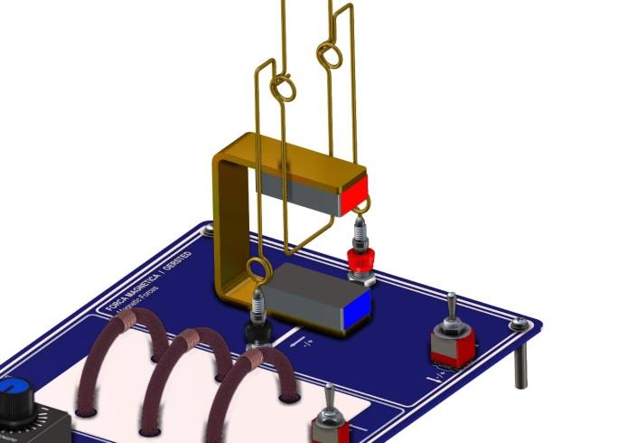
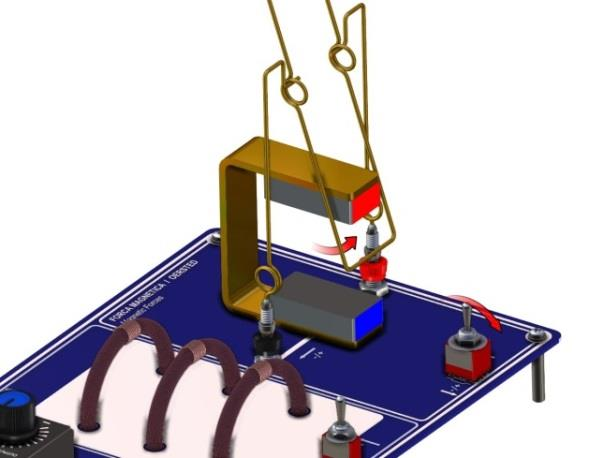
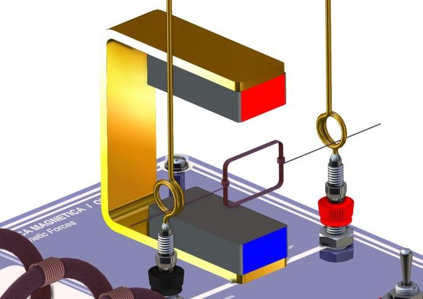
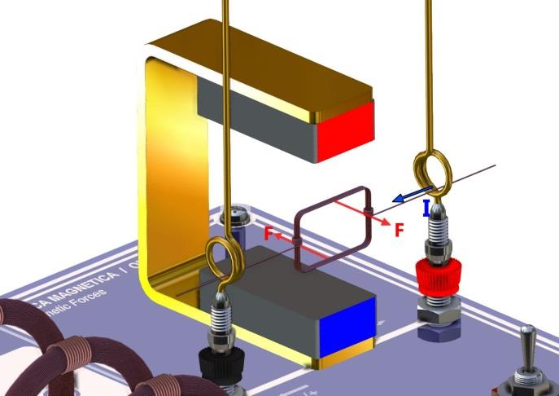

Meça a força que um ímã exerce sobre um fio com corrente de duas
maneiras independentes, pela inclinação do balanço e pela reação do
ímã sobre uma balança, e compare os dois valores de B·ℓ.
Parte A: balanço
Parte B: balança
Parte C: motor (demonstração)
fonte de bancada 0–3 A
Bancada e protocolo
Montagem
As Partes A e B medem a mesma grandeza, o produto B·ℓ do ímã em U, por
caminhos diferentes. A Parte C troca o balanço pelo rotor e mostra o
torque em uma espira.
Objetivos de aprendizagem
Prever o sentido da força com \(\vec F=I\,\vec\ell\times\vec B\) e testar as inversões de corrente e de campo.
Medir a força em função da corrente e verificar que \(F\propto I\).
Converter deslocamento em força por uma calibração mecânica do balanço (Parte A) e medir a força diretamente pela terceira lei de Newton (Parte B).
Comparar os dois valores de B·ℓ e discutir o que cada método supõe.
Relacionar o par de forças em uma espira ao torque e ao funcionamento do motor elementar (Parte C).
Material
Do kit AZEHEB: placa de experimentos, ímã em U, balanço magnético, duas torres, rotor do motor elementar e par de cabos banana/jacaré.
Do laboratório: fonte de bancada Instrutherm FA-3003 (0–32 V, 0–3 A, com modo de corrente constante e mostrador de corrente).
Parte A: régua ou papel milimetrado colado em papelão, fita adesiva, celular para fotografar e uma balança qualquer para pesar o balanço.
Parte B: balança digital de 0,01 g (não faz parte do kit), uma régua de madeira ou plástico e duas pilhas de livros ou caixas da mesma altura, ou um suporte universal com garra.
Referencial para todas as previsões
Antes de energizar, desenhe três eixos e declare o ponto de vista do
observador. Use no registro as expressões para dentro do ímã,
para fora do ímã, para cima e para baixo.
Marque o sentido convencional da corrente e o campo do polo norte
(bloco vermelho) para o polo sul (bloco azul). Sem esse referencial, um
acerto de sinal não pode ser auditado.
Parte A: o campo vertical empurra o trecho inferior na horizontal e o
balanço inclina até o torque do peso equilibrar o da força. Parte B: com
o ímã em pé, o campo fica horizontal, a força no fio fica vertical e a
balança registra a reação sobre o ímã (seta −F). Nos dois desenhos, o
círculo com ponto é o fio visto de frente, com a corrente saindo da
página. Esquema do roteiro.
Parte A
Balanço: deslocamento em função da corrente
Primeiro os sinais, com uma inversão por vez; depois a série de
correntes, medindo o deslocamento do balanço.

Figura 1 — configuração inicial. O trecho inferior
do balanço ocupa o vão do ímã; o polo norte vermelho fica para cima.
Fonte: manual AZEHEB.
Previsão obrigatória antes de energizar.
Com o polo N vermelho para cima, indique o sentido vertical do campo.
Para a corrente entrando pela torre do borne vermelho, aplique a regra
da mão direita e preveja se o balanço irá para dentro ou para fora do
ímã. Preveja também o que muda ao inverter apenas a corrente, apenas o
ímã e ambos. Não corrija a previsão depois de observar.
Preparação
Desconecte o adaptador de 6 V e deixe a chave do setor “força magnética/Oersted” na posição central. Instale as duas torres nos bornes, pendure o balanço e posicione o ímã em U como na Figura 1, com o polo N vermelho para cima. O trecho inferior deve ficar no meio do vão, sem tocar os blocos.
Com a fonte desligada, ligue um cabo na saída + e outro na saída −. Prenda os jacarés nas torres, perto da base. Leve os cabos para longe do balanço, sem encostar nele.
Ajuste a corrente da fonte no mínimo e a tensão em cerca de 3 V. Ao ligar, a fonte entra em corrente constante (indicador CC): a corrente fica a mesma mesmo que o contato nos ganchos do balanço varie.
Prenda a escala milimetrada na vertical, logo atrás de um dos braços do balanço, no plano do movimento. Apoie o celular numa pilha de livros, de lado para o balanço, para fotografar sempre da mesma posição.
Meça o comprimento L, do ponto de apoio no gancho até o eixo do trecho inferior, e o comprimento b do trecho inferior. Anote a distância L′ do pivô até o ponto do braço em que você vai ler o deslocamento. Ao final da aula, pese o balanço (m).
Teste dos sinais (antes da série)
Com 0,5 A, observe o sentido do primeiro deslocamento e compare com a previsão. Volte ao mínimo.
Inverta somente a corrente, trocando os pinos banana nas saídas da fonte. Repita.
Com a corrente no mínimo, vire o ímã em U de cabeça para baixo para inverter o campo. Repita as duas polaridades e registre na Tabela 1.
Volte o ímã para a posição da Figura 1 antes da série de medidas.
Série de medidas da Parte A
Com a corrente no mínimo, marque a posição de repouso na escala (ou fotografe).
Suba a corrente de 0,10 em 0,10 A. Em cada valor, espere a oscilação parar (um toque leve na mesa ajuda a vencer o atrito nos ganchos), fotografe e anote a posição do braço, \(x_+\), e a corrente indicada pela fonte.
Pare quando o trecho inferior chegar perto da borda dos blocos do ímã ou encostar em algo; daí em diante o campo deixa de ser o mesmo. Em geral isso acontece com alguns milímetros de deslocamento.
Volte ao mínimo, inverta os pinos banana na fonte e repita a série, anotando \(x_-\).
Para cada corrente, use \(x=\frac{x_+-x_-}{2}\), medido a partir do repouso. A média cancela o erro de zero da escala.

Figura 2 — resposta do balanço. A ilustração exagera
a inclinação; nas medidas, mantenha o trecho inferior dentro do vão.
Fonte: manual AZEHEB.
Parte B
Balança: a força medida pela reação do ímã
Pela terceira lei de Newton, a força do ímã sobre o fio tem a mesma
intensidade que a força do fio sobre o ímã. Com o ímã sobre a
balança e o campo horizontal, essa reação vira uma variação de massa
indicada.
Previsão antes de energizar.
Com o ímã em pé e o bloco N à esquerda, desenhe B, a corrente e a força
sobre o fio. A leitura da balança deve aumentar ou diminuir? Use a
estimativa da Parte A para prever quantos gramas a leitura deve mudar
com 1,0 A.
Procedimento da Parte B
Coloque a balança de 0,01 g na bancada, longe da fonte. Ponha o ímã em U em pé sobre o prato, com a abertura para cima: os blocos vermelho e azul ficam frente a frente na horizontal e o campo entre eles fica horizontal.
Monte duas pilhas de livros, uma de cada lado da balança, e apoie sobre elas a régua de madeira ou plástico (ou use o suporte universal com uma vareta isolante). Pendure o balanço pela régua, pelas argolas de cima. A régua precisa ser isolante: uma haste metálica ligaria as duas argolas e a corrente não passaria pelo balanço.
Ajuste a altura das pilhas até o trecho inferior do balanço ficar no meio do vão entre os blocos, perpendicular à linha que liga os blocos e sem tocar o ímã.
Prenda os jacarés nos dois braços do balanço, logo abaixo das argolas. Os cabos não podem encostar na balança nem no ímã.
Com a corrente no mínimo, aguarde a leitura estabilizar e tare a balança.
Suba a corrente de 0,25 em 0,25 A até 2,5 A. Em cada valor, espere a leitura estabilizar e anote \(m_+\). Volte ao mínimo, confira se a leitura voltou ao zero, inverta os pinos banana na fonte e repita, anotando \(m_-\).
Para cada corrente, use \(\Delta m=\frac{m_+-m_-}{2}\) e \(F=\Delta m\,g\). A média elimina a deriva do zero e o efeito do aquecimento do fio sobre a balança.
Parte C
Motor elementar (demonstração)
O balanço dá lugar à espira: forças opostas nos ramos longos formam
um binário e transferem trabalho ao rotor.

Figura 3 — rotor instalado. A espira deve girar sem
tocar o ímã, os suportes ou cabos. A instalação é feita somente com
a corrente no mínimo. Fonte: manual AZEHEB.
Previsão antes da partida.
Desenhe a corrente nos dois ramos longos da espira, aplique o produto
vetorial em cada ramo e preveja o sentido do par de forças e da
rotação inicial. Indique também as orientações em que o torque seria
máximo ou nulo.
Procedimento da Parte C
Volte à montagem da Parte A na placa, com a corrente no mínimo, e retire o balanço.
Apoie o rotor nos dois suportes circulares das torres e posicione a espira entre os polos do ímã, como na Figura 3.
Gire o rotor à mão, sem corrente, para verificar liberdade de movimento e distância segura do ímã e dos cabos.
Registre a previsão vetorial. Suba a corrente até cerca de 0,5 A e dê um pequeno impulso no rotor apenas se necessário para vencer uma posição de torque nulo ou o atrito estático.
Se a rotação ficar muito alta, reduza a corrente na fonte ou, com cuidado, afaste ligeiramente o ímã em U. Não passe de 1,0 A.
Observe o sentido de partida e a regularidade por 5–10 s, volte ao mínimo e repita com a corrente invertida.
Critérios de observação
Sentido de partida comparado ao par de forças previsto.
Existência de posições mortas e necessidade real do impulso inicial.
Rotação estável, intermitente, oscilatória ou interrompida.
Efeito qualitativo de reduzir a corrente ou afastar o ímã.
Ruído de contato, atrito nos suportes e desalinhamento do eixo.
Modelo e derivação
Fundamentos
A sequência parte da carga individual, passa ao fio, mostra como cada
método transforma uma leitura em força e fecha no modelo energético e
dinâmico do rotor.
1. Da partícula ao elemento de corrente
Para uma carga q com velocidade v em um campo B,
a parte magnética da força de Lorentz é um produto vetorial:
\[
\vec F_B=q\,\vec v\times\vec B.
\]
A força é perpendicular à velocidade e ao campo; por isso o campo magnético não altera diretamente a energia cinética de uma carga pontual.
\[
\begin{aligned}
d\vec F
&=(nA\,d\ell)q\,\vec v_d\times\vec B\\
&=I\,d\vec\ell\times\vec B.
\end{aligned}
\]
O volume A dℓ contém nA dℓ portadores, cada um com velocidade de deriva v_d.
\[
\begin{aligned}
\vec F&=I\,\vec\ell\times\vec B,\\
F&=BI\ell\sin\alpha.
\end{aligned}
\]
A orientação de dℓ acompanha a corrente convencional, inclusive quando os portadores microscópicos são elétrons.
No fio, inverter apenas I ou apenas B troca o sinal de
F; inverter ambos preserva o sinal. A força é máxima para 90° e
nula quando o trecho é paralelo ao campo. No balanço, os braços
verticais ficam paralelos ao campo vertical da Parte A e não recebem
força: só o trecho inferior que está entre os blocos conta. Como o
campo não termina abruptamente na borda dos blocos, o comprimento que
entra na conta é um comprimento efetivo,
\(\ell_{\mathrm{ef}}=\frac{1}{B_0}\int B\,d\ell\), um pouco maior que a
largura dos blocos.
2. Parte A: equilíbrio do balanço
O balanço é um pêndulo físico apoiado nos ganchos. A força magnética
horizontal F atua no trecho inferior, à distância
L do pivô; o peso atua no centro de massa, à distância
\(L_{\mathrm{cm}}\). No equilíbrio, os torques se anulam:
A última expressão vale para um balanço de fio uniforme, com dois
braços de comprimento L e trecho inferior de comprimento
b. O ângulo vem do deslocamento lido no braço:
\(\sin\theta=\frac{x}{L'}\), em que L′ é a distância do
pivô ao ponto de leitura. Essa é a calibração mecânica que transforma
deslocamento em força.
3. Parte B: a balança mede a reação
Com o ímã em pé, o campo é horizontal e perpendicular ao trecho
inferior, e a força no fio é vertical. Pela terceira lei de Newton,
o fio exerce sobre o ímã uma força de mesmo módulo e sentido oposto,
que a balança registra como variação de massa:
Esse método não depende da massa nem da geometria do balanço, e o
balanço não se move. Ele supõe apenas que nada além da reação
magnética muda a leitura: cabos encostados, fio tocando o ímã ou
correntes de ar invalidam a medida.
4. O que os ajustes fornecem
Nos dois métodos, o gráfico de F contra I deve ser
uma reta pela origem. O coeficiente angular é o produto
\(B\ell_{\mathrm{ef}}\), em T·m, que caracteriza o ímã e o trecho do
fio dentro do vão:
\[
\begin{aligned}
F&=\left(B\ell_{\mathrm{ef}}\right)I=s\,I,\\
s&=\frac{\sum_i I_iF_i}{\sum_i I_i^2},\qquad
u_s=\sqrt{\frac{\sum_i\left(F_i-s\,I_i\right)^2}{(n-1)\sum_i I_i^2}}.
\end{aligned}
\]
Ajuste de uma reta que passa pela origem, com n pontos; u_s é a incerteza do coeficiente angular estimada pela dispersão.
Compare \(s_A\), do balanço, com \(s_B\), da balança. Os dois usam o
mesmo ímã e o mesmo trecho de fio; uma diferença maior que as
incertezas aponta para a calibração do balanço (massa, centro de
massa, ângulo) ou para o trecho inferior saindo da região de campo na
Parte A. Se o campo no vão for medido com uma sonda Hall, o
comprimento efetivo sai de \(\ell_{\mathrm{ef}}=\frac{s}{B}\).
5. Da força ao par de forças (Parte C)
Em uma espira retangular situada em campo aproximadamente uniforme,
os ramos opostos recebem forças de mesmo módulo e sentidos opostos.
A soma das forças pode ser zero, mas suas linhas de ação não
coincidem: elas formam um binário. Somando o momento de cada força
em relação ao eixo resulta, para N espiras de área A,
o módulo \(\tau=NIAB\sin\theta\).
\[
\begin{aligned}
\vec\mu&=NIA\,\hat n,\\
\vec\tau&=\vec\mu\times\vec B,\\
\tau&=NIAB\sin\theta.
\end{aligned}
\]
O momento de dipolo magnético tem direção normal ao plano da espira, definida pela regra da mão direita.
Na expressão do torque, θ é o ângulo entre a normal da espira e o
campo. A Figura 4 deve ser redesenhada no relatório com I,
B e F nos dois ramos, não apenas copiada.

Figura 4 — par de forças no rotor. As forças são
opostas, mas atuam em linhas distintas; por isso o torque resultante
pode ser não nulo. Fonte: manual AZEHEB.
6. Energia, trabalho e estabilidade
\[
\begin{aligned}
U(\theta)&=-\vec\mu\cdot\vec B=-\mu B\cos\theta,\\
\tau_\theta&=-\frac{dU}{d\theta}=-\mu B\sin\theta,\\
dW_{\mathrm{em}}&=\tau_\theta\,d\theta=-dU.
\end{aligned}
\]
O trabalho eletromagnético positivo reduz U e pode aumentar a energia cinética ou vencer uma carga.
O alinhamento μ paralelo a B, θ = 0, minimiza U e é estável. O estado
antiparalelo, θ = π, maximiza U e é instável. Um rotor alimentado sem
comutação não gira indefinidamente: ele tende a alinhar-se, ultrapassa
o mínimo por inércia e pode oscilar até o atrito dissipar a energia.
A fonte elétrica repõe a energia convertida em trabalho mecânico e em
perdas resistivas e de contato.
7. Por que a comutação mantém torque útil
Após meia volta, uma corrente fixa faria o torque mudar de sinal e
frear a rotação que acabou de produzir. Em um motor de corrente
contínua ideal, o comutador inverte a corrente da espira a cada meia
volta; assim, μ também se inverte e o torque mecânico conserva o
sentido útil. O envelope idealizado torna-se aproximadamente:
Em rotores didáticos simples, o contato pode interromper a corrente
durante a metade desfavorável em vez de realizar uma reversão
contínua perfeita. Nesse caso, a inércia atravessa a região sem torque
até o contato útil retornar. Atrito, contato imperfeito e as posições
em que sin θ = 0 explicam por que um pequeno impulso pode ser
necessário.
J é o momento de inércia do rotor, θ˙ sua velocidade angular,
θ¨ sua aceleração, b um coeficiente efetivo de atrito viscoso
e τ_carga o torque resistente. Aumentar a corrente eleva o torque
eletromagnético; afastar o ímã reduz o campo e, portanto, o torque.
9. Análise dimensional
\([qvB]=\mathrm{C}\,\frac{\mathrm m}{\mathrm s}\,\mathrm T=\mathrm N\), pois \(\mathrm T=\frac{\mathrm N}{\mathrm{A\,m}}\) e \(\frac{\mathrm C}{\mathrm A}=\mathrm s\).
\([BI\ell]=\mathrm{T\,A\,m=N}\), unidade de força; o coeficiente angular \(s=B\ell_{\mathrm{ef}}\) tem unidade \(\mathrm{T\,m}=\mathrm{N/A}\).
\([\mu]=\mathrm{A\,m^2}\); o número de espiras \(N\) é adimensional.
\([\mu B]=\mathrm{A\,m^2\,T=N\,m=J}\): torque e energia têm a mesma dimensão, embora sejam grandezas distintas.
\([J\ddot\theta]=\frac{\mathrm{kg\,m^2}}{\mathrm{s^2}}=\mathrm{N\,m}\) e \([b]=\mathrm{N\,m\,s}\), com o radiano tratado como adimensional.
Registro sem valores fabricados
Dados
Preencha durante a prática. As células permanecem vazias porque o
roteiro não substitui observações por números simulados.
Parte A — teste dos sinais
Tabela 1 — inversões independentes de corrente e campo
Sentido de I
Polos / sentido de B
Previsão de F
Deslocamento observado
Concordância
Medidas do balanço e do ímã
Tabela 2 — calibração mecânica e geometria
Grandeza
Valor
Incerteza
Instrumento
massa do balanço, m (g)
braço, L: pivô até o eixo do trecho inferior (mm)
trecho inferior, b (mm)
pivô até o ponto de leitura, L′ (mm)
largura dos blocos ao longo do fio, w (mm)
vão entre os blocos (mm)
Parte A — balanço
Tabela 3 — deslocamento em função da corrente (passos de 0,10 A)
I (A)
x₊ (mm)
x₋ (mm)
x = (x₊ − x₋)/2 (mm)
θ (°)
F (mN)
Parte B — balança
Tabela 4 — variação da leitura em função da corrente (passos de 0,25 A)
I (A)
m₊ (g)
m₋ (g)
Δm = (m₊ − m₋)/2 (g)
F = Δm·g (mN)
Parte C — partida e regime do motor
Tabela 5 — comportamento do rotor em cada tentativa
Configuração
I (A)
Sentido de partida
Estabilidade
Impulso necessário?
Tratamento dos dados
Parte A: para cada corrente, calcule \(\theta=\arcsin\frac{x}{L'}\) e \(F=mg\,\frac{L+b}{2L+b}\tan\theta\).
Parte B: calcule \(F=\Delta m\,g\), com Δm em kg.
Faça os dois gráficos de F contra I no mesmo par de eixos e ajuste retas pela origem; anote \(s_A\pm u_{s_A}\) e \(s_B\pm u_{s_B}\), em mN/A.
Compare \(s_A\) e \(s_B\) e calcule \(\ell_{\mathrm{ef}}=\frac{s}{B}\) se o campo no vão tiver sido medido. Compare \(\ell_{\mathrm{ef}}\) com a largura w dos blocos.
Parte C: confronte o sentido de partida com o par de forças desenhado.
Controles e desvios
Na Parte A, confira se o balanço volta ao mesmo repouso entre as
séries e se \(x_+\) e \(-x_-\) são parecidos; uma assimetria grande
indica trecho inferior fora do centro do vão. Na Parte B, confira se
a leitura volta a zero com a corrente no mínimo e se ela não muda ao
encostar de leve nos cabos: se mudar, os cabos estão transmitindo
força para a balança.
Incertezas
Para leitura uniforme com menor divisão \(\delta x\), uma estimativa é
\(u(x)=\delta x/\sqrt{12}\). Para pequenos ângulos,
\(F\approx mg\,\frac{L_{\mathrm{cm}}}{L}\,\frac{x}{L'}\), e as
incertezas relativas se somam em quadratura:
Na Parte A, a incerteza de x costuma dominar nas correntes
baixas, e a saída do campo uniforme domina nas altas. Na Parte B, com
resolução de 0,01 g e leituras de algumas dezenas de centésimos, o
limite costuma ser a estabilidade da leitura.
Entrega individual ou em grupo
Relatório
Mostre o encadeamento previsão → medida → modelo. O resultado central
é a comparação entre os dois valores de B·ℓ.
Ao imprimir, somente esta aba e a identificação do experimento serão exibidas.
Estudante(s)
Turma / curso
Data
Bancada / grupo
Professor(a)
Referencial adotado
Parte A — balanço
Inclua as Tabelas 1 a 3 sem apagar previsões divergentes.
Mostre a calibração mecânica: m, L, b, L′ e a expressão de F.
Gráfico de F × I com ajuste pela origem e \(s_A\).
Parte B — balança
Inclua a Tabela 4 e o diagrama com B, I, F no fio e reação no ímã.
Gráfico de F × I com ajuste pela origem e \(s_B\).
Compare \(s_A\) e \(s_B\) dentro das incertezas.
Parte C — motor
Inclua a Tabela 5, o par de forças nos dois ramos e a relação
entre τ = μ × B, U = −μ·B, estabilidade e comutação.
Conclusão
Responda com os números do grupo: F é proporcional a I? Os dois
métodos concordam? Qual limitação dominou cada um?